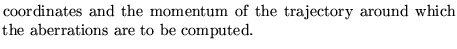
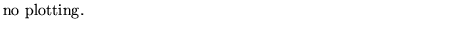
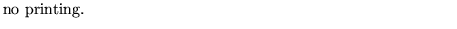
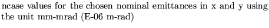

Input formatParameter definitions
LINEgeometric aberrations....(up to 80 characters)
ener
ncase,npart,ncoup
nplot,nprint,mlocat,[list]
for to ncase


ener

ncase
npart
ncoup
nplot
1 -1 
nprint
-2 
-1
0
mlocat
list

Examples
This example is fictitious.
line geometric aberrations 0.19518E+01 -0.5862785371E-01 0.1816010291E+02 0.3831956152E-01 0 0 0 0 0 3 100 0 1 -1 0 40 38 38 75 75 150 150;